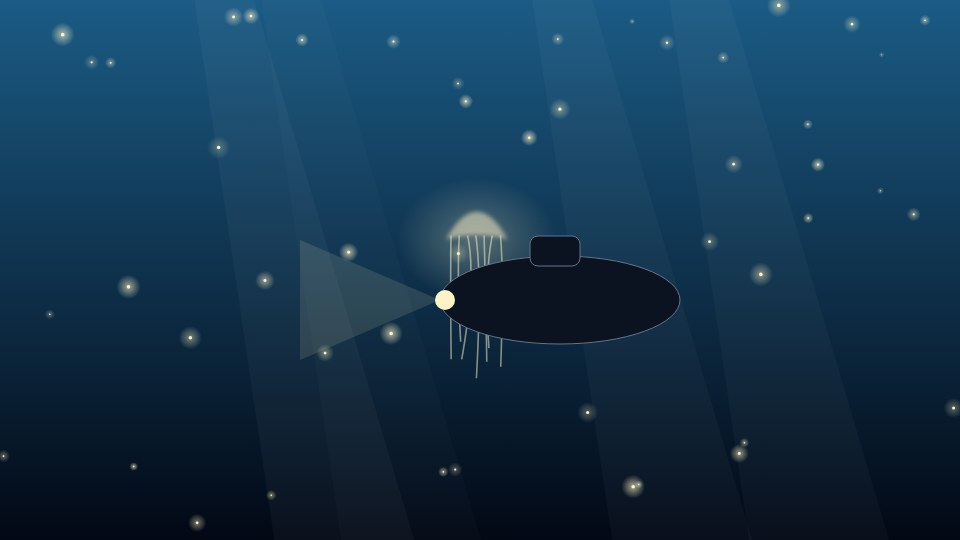

Ocean life
Diving the twilight zone with red light
How low-light cameras changed what submersible crews see at 800 metres.
Abyssal Notes staff

How low-light cameras changed what submersible crews see at 800 metres. Bioluminescence in the twilight zone is driven by luciferin and luciferase, and researchers have described photophores in more than 1,500 species of fish alone.
Counterillumination, lures and alarm flashes are the three uses of bioluminescence seen most often in the twilight zone. Each evolved independently many times, which is why bioluminescence is described as one of the most repeated inventions in evolution.
Studying bioluminescence means working in the dark: crews in the twilight zone film with red light, because most deep-sea animals cannot see it.